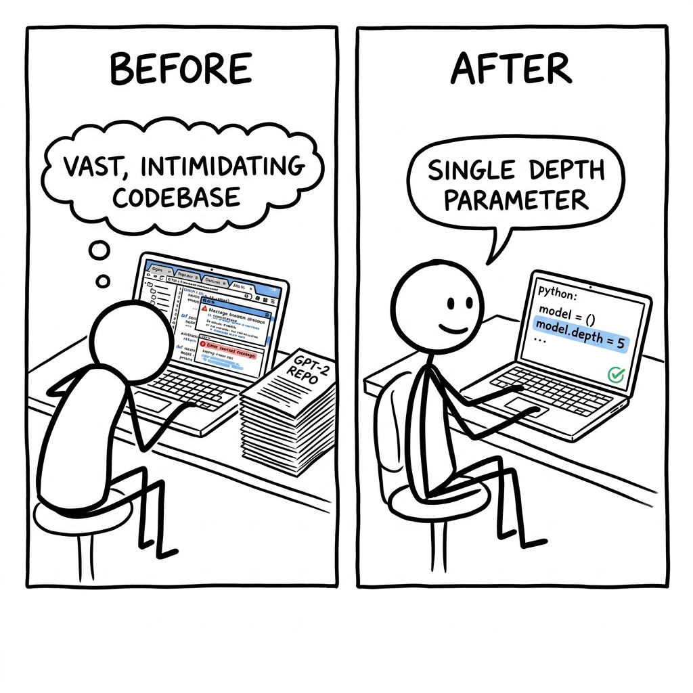

You're a university student, excited to experiment with training your own GPT-2-level language model, but you discover it originally cost $43,000 and requires a vast, intimidating codebase hundreds of files deep. Your real competitor isn't another cloud provider, it's the overwhelming task of manually sifting through complex open-source repositories to even begin.

The trade it makes versus the dominant alternative.
What it gives up
- It does not aim for the ultimate raw performance of state-of-the-art, multi-billion-parameter LLMs.
- It trades exhaustive configurability and enterprise-grade features for opinionated simplicity and a focused 'depth' dial.
- It is an 'experimental harness', implying it may not offer the production-readiness or robustness of commercial solutions.
- It is primarily optimized for a specific high-performance GPU node (8xH100), with other hardware potentially offering reduced efficiency.
- It sacrifices the broad applicability and flexibility of a generic LLM framework for a streamlined, minimalist codebase.
What it gets in return
- It offers extremely low-cost training for GPT-2 level models, making LLM experimentation accessible for under $100.
- It provides full end-to-end control and understanding of the entire LLM stack within a single, cohesive codebase.
- Its minimal and hackable Python code enables rapid iteration and experimentation for individual researchers and hobbyists.
- It significantly reduces the cognitive load for users, allowing them to focus on core LLM concepts without framework complexity.
- It fosters a community-driven approach to optimizing 'micro models' via a public speedrun leaderboard for GPT-2 capability.
Dominant incumbent commercial LLM providers like OpenAI cannot copy nanochat without destroying their business model. Their revenue relies on providing powerful, proprietary models as black-box APIs, monetizing usage rather than enabling low-cost self-training. Offering a hackable, sub-$100 training stack would cannibalize their API revenue and expose their valuable intellectual property. Similarly, large-scale open-source frameworks like DeepSpeed/Megatron-LM or even Hugging Face Transformers are designed for immense flexibility, generality, and extreme performance for complex research or enterprise needs. Copying nanochat's core principle of 'minimal, hackable' simplicity would require them to strip away layers of abstraction and configurability essential to their existing user base, alienating their target audience who prioritize power and breadth over extreme cognitive simplicity and ultra-low cost.
Four dimensions that actually split the field.
- Code you can see: Can you look at and change all the computer code that makes the AI work?
- Train a GPT for $100: Can you create an AI with GPT-2's smarts for less than $100 on rented cloud computers?
- All-in-one toolkit: Does it give you everything you need (making sense of text, training, fine-tuning, talking to it) all in one simple package?
- Easy to hack on: Is the core code simple and clean enough that a single person can easily understand and change it to experiment?
| Product | Code you can see | Train a GPT for $100 | All-in-one toolkit | Easy to hack on |
|---|---|---|---|---|
| nanochat (This Product) | OpenEvery file is plain Python you can fork, released under an MIT License. | YesThe README documents training a GPT-2 capability model for only $48 on an 8xH100 node. | FullIt covers all major LLM stages including tokenization, pretraining, finetuning, evaluation, inference, and a chat UI. | YesThe code is described as 'minimal/hackable' and 'not an exhaustively configurable LLM framework'. |
| OpenAI (e.g. ChatGPT/GPT-4) | ClosedAccess is API-only, with the underlying source code and model architecture kept private. | NoThese models are offered via API, with costs scaling per token, not for custom training from scratch. | PartialIt provides powerful models and APIs, but not the tools for full end-to-end training of custom models. | NoInteraction is through a fixed API; the internal architecture and logic cannot be modified by users. |
| Hugging Face Transformers | OpenThe library and a vast ecosystem of models are fully open-source on GitHub. | PartialIt's possible to train models, but building a complete pipeline for under $100 demands significant expertise and integration effort. | ModularIt provides flexible building blocks (models, datasets, tokenizers, trainers) that require assembly and configuration. | ModerateHighly flexible and extensible for diverse applications, but the framework itself has a steep learning curve due to its generality. |
| DeepSpeed/Megatron-LM | OpenThese frameworks are open-source, primarily used by large organizations or researchers. | NoThey are designed for training extremely large models on hundreds or thousands of GPUs, making costs prohibitive for small budgets. | Focus: TrainHighly specialized for large-scale distributed training, typically requiring other tools for data preparation, evaluation, and deployment. | NoExtremely complex and optimized for performance on massive clusters, not for individual developer hackability or rapid iteration. |
Features hiding in the codebase that the README doesn't advertise. Each one is a bet about where the product is going.
- 1LLM Python Tool Usenanochat/execution.py, nanochat/engine.py, tasks/gsm8k.py, tasks/humaneval.py, tasks/spellingbee.pyThe product is betting heavily on agentic LLMs that can use external tools to verify their own reasoning and solve complex problems, moving beyond just text generation. This is a core part of building robust AI abilities.
- 2AI-Powered Research & Development.claude/skills/read-arxiv-paper/SKILL.md, dev/LEADERBOARD.mdThe project is investing in LLM-driven self-improvement and research acceleration, turning the development process itself into an LLM-assisted workflow to find novel optimizations and architectural tweaks faster.
- 3Synthetic Self-Identity Datadev/gen_synthetic_data.py, tasks/customjson.pyNanochat aims to explicitly imbue its models with a well-defined identity and knowledge of their own architecture/purpose, a form of self-awareness crucial for building helpful and aligned AI.
- 4Muon-AdamW Hybrid Optimizernanochat/optim.py, dev/LOG.mdAchieving state-of-the-art efficiency and performance at the target scale requires highly specialized, custom-tuned optimizers that go beyond standard Adam/AdamW, combining strengths of different optimization theories.
- 5Custom FP8 Training Precisionnanochat/common.py, nanochat/gpt.py, nanochat/fp8.py, dev/LEADERBOARD.md, dev/LOG.mdTo maximize training efficiency on cutting-edge hardware (like H100/H200), the project requires extremely fine-grained, explicit control over numerical precision, including a custom, minimal FP8 implementation.
- 6Advanced Per-Layer Model Controlnanochat/gpt.py (resid_lambdas, x0_lambdas, smear_gate, backout_lambda, value_embeds), dev/LOG.mdThe project is actively exploring and integrating advanced architectural tweaks and learnable per-layer scalars (inspired by ResFormer and modded-nanoGPT) to unlock significant performance gains, especially for smaller, compute-optimal models.
- 7Scaling Law-Driven Hyperparametersscripts/base_train.py, dev/LOG.md (Auto Batch Size Scaling)Nanochat is designed for a 'miniseries' of compute-optimal models. Automatic, principled scaling of hyperparameters based on current research into scaling laws ensures efficiency and performance across a range of model sizes without manual re-tuning.
Features every competitor ships that this codebase deliberately doesn't. Strategy is choosing what not to do.
- 1No Multi-Modal Inputs/OutputsNo image/video processing libraries, no visual/audio input types in nanochat/engine.py or tokenizer.py. Tool use is explicitly Python code.Stays laser-focused on text-based LLM training and agentic reasoning. Adding multi-modal capabilities would drastically increase complexity (data, models, compute, evaluation) and diverge from the 'minimal/hackable' philosophy. Risk: falls behind competitors offering visual or audio understanding.
- 2No Real-time Web Accessnanochat/execution.py warns about network access but doesn't implement it as a feature for the LLM. No built-in web scraping or external API integration for the LLM itself.Prioritizes in-context knowledge and learned reasoning over real-time factual retrieval. This simplifies inference, reduces latency, and avoids the complexities and costs of RAG or dynamic API integrations. Risk: LLM's knowledge becomes stale, cannot answer current events or dynamic queries.
- 3No User-Facing Analytics Dashboardwandb is used for developer experiment tracking (scripts/base_train.py), not for user-facing metrics. scripts/chat_web.py offers only basic worker pool stats.Focuses on being an 'experimental harness' and 'hackable codebase' for LLM training, not a production-ready SaaS chat platform. Avoiding user-centric analytics reduces complexity, database requirements, and privacy burdens. Risk: not suitable for direct deployment as a commercial service without significant additional development.
- 4No User Plugin SystemWhile internal Python tool use exists (nanochat/engine.py), there's no public API or framework (like OpenAI's plugins or LangChain agents) for end-users to extend nanochat's capabilities with external services or custom code.Keeps the system self-contained and controlled, reducing the attack surface and complexity of managing third-party code. This aligns with the 'minimal, cohesive, hackable' philosophy. Risk: Limits extensibility and ecosystem growth compared to platforms with rich plugin ecosystems.
- 5No Multi-Tenancy or User Authscripts/chat_web.py is a single-user UI without user accounts, authentication, authorization, or isolation of user data/models. All requests are handled by a shared pool of workers.Simplifies the architecture significantly, focusing entirely on core LLM training and inference. Building a secure multi-tenant system adds enormous complexity (database schema, API keys, access control, resource allocation). Risk: Not production-ready for multi-user deployments; lacks security and data separation.
- 6No Enterprise Data GovernanceData handling (nanochat/dataset.py, tasks/) focuses on datasets for training/evaluation. No features for GDPR-like data deletion, auditing, anonymization services, or role-based access control within the data lifecycle.Streamlines data processing for research and development. Implementing robust data governance and access control mechanisms is a significant undertaking, often requiring legal and compliance overhead, which is outside the scope of an 'experimental harness'. Risk: Not suitable for sensitive or regulated data environments without substantial additional effort.